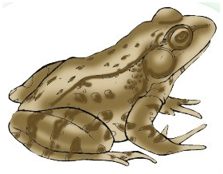

Picha inaonyesha chui mwenye mwili wenye madoa meusi. Mwanafunzi ataje jina la picha, chui, na kuliandika kwenye daftari.

Picha inaonyesha chura mdogo mwenye miguu minne. Mwanafunzi ataje jina la picha, chura, na kuliandika kwenye daftari.Picha inaonyesha chupa ya kioo yenye rangi ya samawati na shingo nyembamba. Mwanafunzi ataje jina la picha, chupa, na kuliandika kwenye daftari.